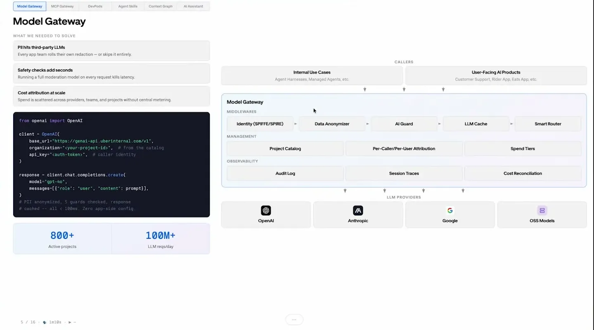
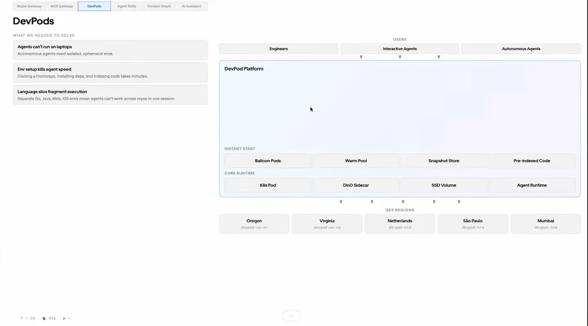
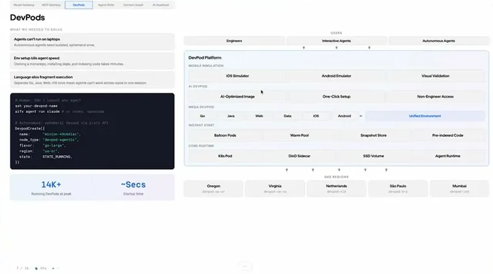
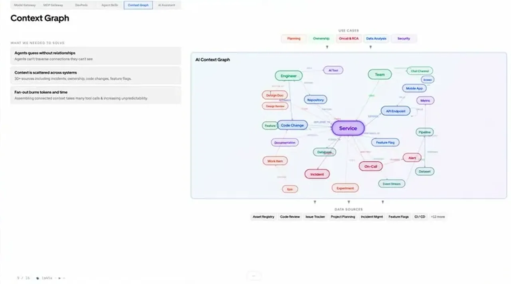
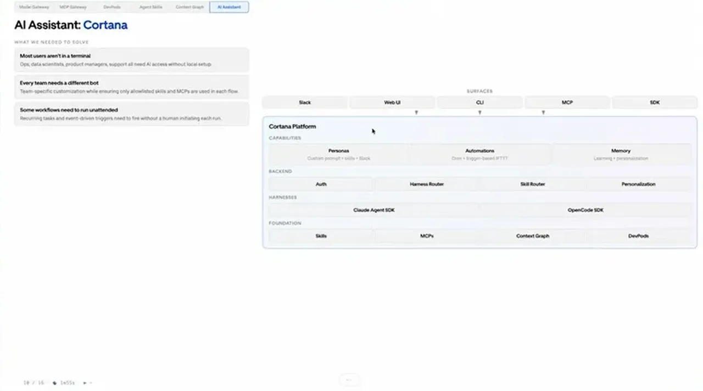
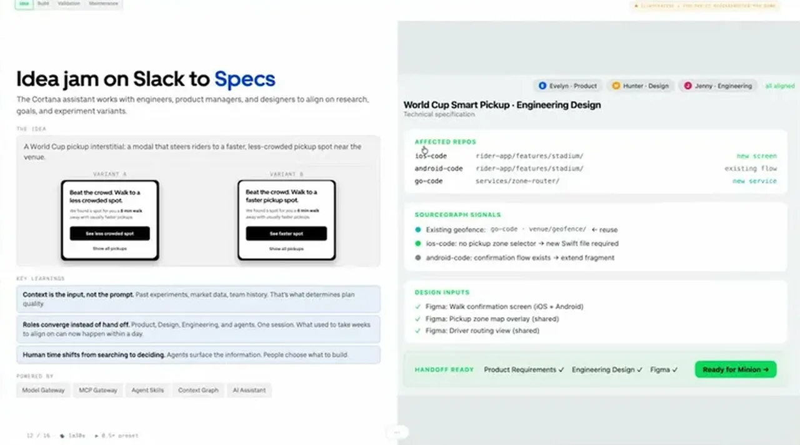
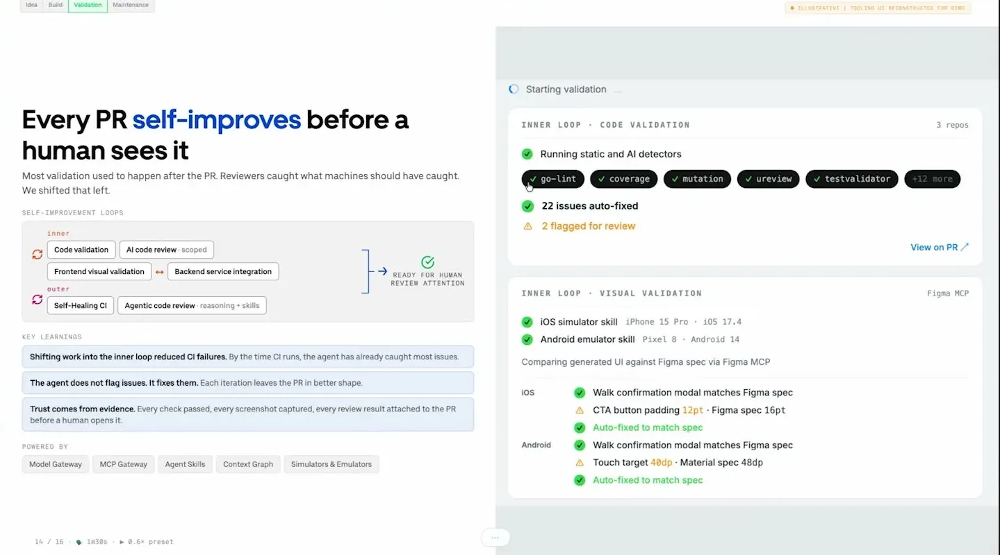

Agentic SDLC at Uber
The talk lays out Uber's whole agentic SDLC platform end to end: six named building blocks (model gateway, MCP gateway, DevPods, skills marketplace, context graph, Cortana assistant), the numbers each runs at, how they wire into the Minion coding agent, and the inner-loop / outer-loop process an agent-authored PR follows before a human sees it.
If you only read one thing
- Over the past year, agentic AI investment brought Uber to more than 70% of PRs authored by local or cloud agents and doubled lines of code per engineer year-over-year.
- The stack is six named blocks: a model gateway (800+ projects, 100M+ requests per day, sub-100ms guardrails, 20+ PII types redacted), an MCP gateway (1,000+ tools, 40%+ fleetwide token savings), pre-provisioned Kubernetes DevPod balloon pods, a 2,500-skill managed marketplace, a 40-million-entry context graph, and the Cortana assistant.
- Cortana routes an idea from Slack through research, mockups, and a Minion coding-agent PR that self-improves in an inner loop (visual and backend validation) before hitting outer-loop CI, where self-healing CI and scheduled maintenance skills (e.g. feature-flag cleanup) keep the shipped code up to date.
How the six building blocks connect: agents in the top lane call the gateway and platform in the middle, which draws on DevPods, the context graph, and the wrapped API surface below (ours).
Why this talk is a blueprint, not a take (ours)
Scope: Uber's internal engineering platform: a few thousand engineers across 12 global tech sites, plus non-engineer employees using Cortana; covers coding agents, agent tool access, runtime, knowledge, and the full inner/outer-loop SDLC through maintenance.
A layered stack that puts identity, PII redaction, guardrails, and per-project attribution in front of every model call; auto-wraps internal APIs as MCPs; provides a shared runtime, skills catalog, and context graph; and threads it all into an assistant plus a coding agent that self-validate before humans review. The result they report is 70%+ of PRs authored by agents and 40%+ fleetwide token savings on tools.
Prerequisites the talk implies:
- An identity / workload attestation layer the gateway can front (Uber uses Spire / SPIFFE)
- A machine-readable inventory of internal services (Protobuf / Thrift) that a crawler can auto-wrap into MCPs
- A project catalog so every model and tool call can be attributed and rate-limited per team
- A CI system agents are allowed to act on, plus a way to attach a check table to a PR
- A registry for skills with lint, review, and eval gates, and a shared install command
- Monorepo plus a fast build system (Uber: Bazel) so cross-repo agent runs and DevPod snapshots are feasible
- Cloud runtime capacity for pre-provisioned pods, plus regional presence for globally distributed engineers
What the talk does not say:
- Cost of the stack (model spend, DevPod compute, platform team headcount)
- Size and org shape of the team that built and now runs these components
- Agent failure rates and how often self-healing CI actually recovers vs escalates
- How code quality is measured beyond agent-authored PR share (defects, revert rate, incident rate)
- Security posture details beyond redaction (leakage rates, red-team results, incidents)
- Which model runs which step, and how model choice is governed inside the gateway
- Developer sentiment and adoption curve across the 12 tech sites
- Evidence for the 40%+ fleetwide token savings baseline and measurement window
If you were to replicate one thing first: Stand up a single OpenAI-compatible gateway that requires workload identity, redacts a small set of PII types, and stamps every request with a project id for attribution, before letting any team wire an agent to a vendor model directly.
| Component | What it does (from the talk) | Evidence | Slide |
|---|---|---|---|
| Model gateway | Single OpenAI/Anthropic compatible endpoint with Spire identity, a 20+ PII anonymizer, five specialized guard models under 100ms, project-level attribution, and audit logging. | c3 · 02:05 |  |
| MCP gateway | Auto-crawls internal APIs into MCPs with one config change, hosts SaaS MCPs with shared auth, and layers Direct / Omni / CLI / code-mode patterns to shrink per-call token cost. | c6 · 05:14 |  |
| DevPods (balloon pods) | Pre-provisioned Kubernetes pods with repos snapshotted and search index prebuilt, globally available, so an agent gets an isolated environment in seconds; a mega-DevPod spans all languages for cross-repo work. | c11 · 06:00 |  |
| Skills marketplace | Managed catalog of core and domain skills gated by lint checks, automated review, and a 120-point eval, with a single install command and persona-based auto-install. | c7 · 08:20 |  |
| Context graph | One graph of services, repos, design docs, Jira, incidents, on-call, feature flags, and datasets so agents traverse ownership and dependencies in one place instead of calling 20-30 systems. | c8 · 09:22 |  |
| Cortana AI assistant | Company-wide assistant on Slack, Web, CLI, MCP, and SDK surfaces that plugs into skills, MCPs, and the context graph, with customizable personas and cron/event automations. | c12 · 11:10 |  |
| Minion coding agent | Uber's cloud coding agent (interactive or autonomous) running on DevPods, working across front-end and back-end repos, drafting PRs that stay unpushed until inner-loop checks pass. | c9 · 13:30 |  |
| Inner / outer loop CI | Inner loop runs static analysis, simulator-vs-Figma visual checks, and front-end / back-end integration; outer loop is CI with self-healing auto-fixes and a deeper agentic code review, with a check table attached to the PR. | c9 · 14:59 |  |
| Maintenance skills loop | Completed features enroll into a managed, rate-limited loop of scheduled skills (e.g. feature-flag cleanup) that run off-hours; landed/not-landed diffs become label data for skill improvement. | c10 · 16:01 |
Scale of agentic adoption at Uber
- The speakers report that agentic AI investment over the past year brought more than 70% of Uber's PRs to be authored by local or cloud agents, doubling lines of code produced per engineer year-over-year.
- They also cite over 250 automated migrations covering 9 million lines of code, and credit a multi-year foundation (monorepos, Bazel) as what let this land.
“all of the investments we made in agentic AI have led to more than 70% of our PRs now either by local or cloud agents”
said at 00:31Model gateway: identity, redaction, guardrails, attribution
- All internal and external model traffic routes through a single OpenAI / Anthropic compatible gateway with middleware for identity (Spire), a data anonymizer that redacts more than 20 PII types, and an AI guard with five specialized safety and policy models, all required to run under 100 milliseconds.
- The gateway also attributes every request to a specific project in the catalog, enabling per-caller and per-team spend controls; today more than 800 internal projects route through it, cumulatively handling more than 100 million model requests per day across frontier and open source models.
“we have a data anonymizer that redacts 20 plus PII types”
said at 02:05“Today we have 800 plus projects internally going through this cumulatively handling more than 100 million model requests per day.”
said at 03:09MCP gateway: auto-wrapped APIs and shrinking token tax
- Before the MCP gateway, thousands of internal APIs were not agent-accessible and each SaaS tool required its own authentication.
- An automated crawler now wraps internal Protobuf / Thrift services as MCPs with one config change, and hosted SaaS MCPs (Google, Slack, Jira) share the same auth and rate-limit layer.
- Successive optimizations (Direct MCP, Omni MCP, a CLI-based response pattern, and an auto-installed code-mode skill) have cut fleetwide token usage by more than 40% across now more than 1,000 MCP tools.
“and all of this led to like now we have thousand plus MCP tools and uh just with these optimization efforts we've saved more than 40% fleetwide savings”
said at 05:14Foundations: DevPods, skills marketplace, context graph
- Agents run in pre-provisioned Kubernetes DevPod balloon pods (repositories already snapshotted, search index already built) so a fresh environment starts in seconds; a mega-DevPod holds all repos so cross-repo work does not need per-language setup.
- A managed skills marketplace uses lint checks and automated review to enforce baseline quality, holds 2,500 skills, and runs more than 20,000 skill executions per day; a separate context graph consolidates information scattered across 20 to 30 systems (ownership, dependencies, design docs, incidents, feature flags) into 40 million entries with 150+ node and edge types, cutting the tokens and turns agents burn on basic lookup.
“and we have 2,500 skills and cumulatively more than 20,000 skill executions per day across our fleet”
said at 08:20“We have 40 million entries there right now. It captures all the way from how our mobile apps are built to our back end to our data lake.”
said at 09:22“we have a pre-provisioned Kubernetes balloon pods. When an agent requires a new environment to run, it can take one of that which is already pre-provisioned”
said at 06:00Shipping a feature: Cortana, Minion, inner and outer loop
- Cortana packages skills, MCPs, and the context graph into a single AI assistant available on Slack, Web, CLI, MCP and SDK surfaces; the talk cites 300 unique personas created and more than 20,000 sessions per day in the last month.
- Adam walks a World Cup pickup idea from Slack through Cortana research and Figma mockups into a Minion coding-agent PR that stays as a draft until inner-loop checks pass (static analysis, iOS / Android simulator screenshots compared to the Figma spec, backend staging integration); outer-loop CI then runs with self-healing CI auto-fixing many issues, and completed features can enroll into a managed, rate-limited loop of maintenance skills such as feature-flag cleanup so unused variants get retired on a schedule.
“in the last one month 300 unique personas created and more than 20,000 sessions per day”
said at 11:10“self-healing CI is something that we've implemented here where we can fix a lot of the issues that you hit on CI”
said at 14:59“We had two variants of that world cup uh modal. Now that the the B variant is no longer needed, we can have that scheduled on a loop.”
said at 16:01Commentary (ours)
The numbers describe Uber's own multi-year internal build (gateway, marketplace, graph, DevPods, assistant), not an off-the-shelf product, so the takeaway is less "adopt this tool" than "budget for this category of infrastructure" if agent adoption is expected to scale past a handful of teams (ours). Two things sit under the headline PR share: a centralized gateway that made identity, redaction, attribution, and rate limits solved problems, and a context / skills layer that stopped agents from re-discovering the world each turn. The talk does not disclose cost, team size, agent failure rates, or how quality is judged beyond PR share, so treat the 70% and 40% figures as the story Uber tells about itself rather than an audited benchmark (ours).
Underlying detail — every claim, typed and timestamped (10)
| Stance | Claim | t |
|---|---|---|
| asserts | More than 70% of Uber's PRs are now authored by local or cloud agents, and lines of code per engineer doubled year-over-year. | 00:31 |
| asserts | The model gateway's data anonymizer redacts more than 20 types of PII before requests reach any vendor. | 02:05 |
| asserts | More than 800 internal projects route through the model gateway, cumulatively handling over 100 million model requests per day. | 03:09 |
| asserts | Optimization efforts across the MCP gateway's now thousand-plus tools saved more than 40% in fleetwide token usage. | 05:14 |
| asserts | The managed skills marketplace holds 2,500 skills and runs more than 20,000 skill executions per day fleetwide. | 08:20 |
| asserts | The context graph has 40 million entries spanning mobile apps, backend, and data lake information. | 09:22 |
| asserts | Uber implemented self-healing CI that automatically fixes many issues encountered in the outer loop. | 14:59 |
| asserts | A completed feature's unused variant (e.g. a feature-flag B variant) can be scheduled for automated cleanup via a maintenance skill. | 16:01 |
| asserts | Agents run in pre-provisioned Kubernetes balloon pods so a fresh isolated environment is available in seconds. | 06:00 |
| asserts | In the last month Cortana had 300 unique personas created and more than 20,000 sessions per day. | 11:10 |
Machine-readable copy embedded in this page (script#ontology) and in the corpus ontology.